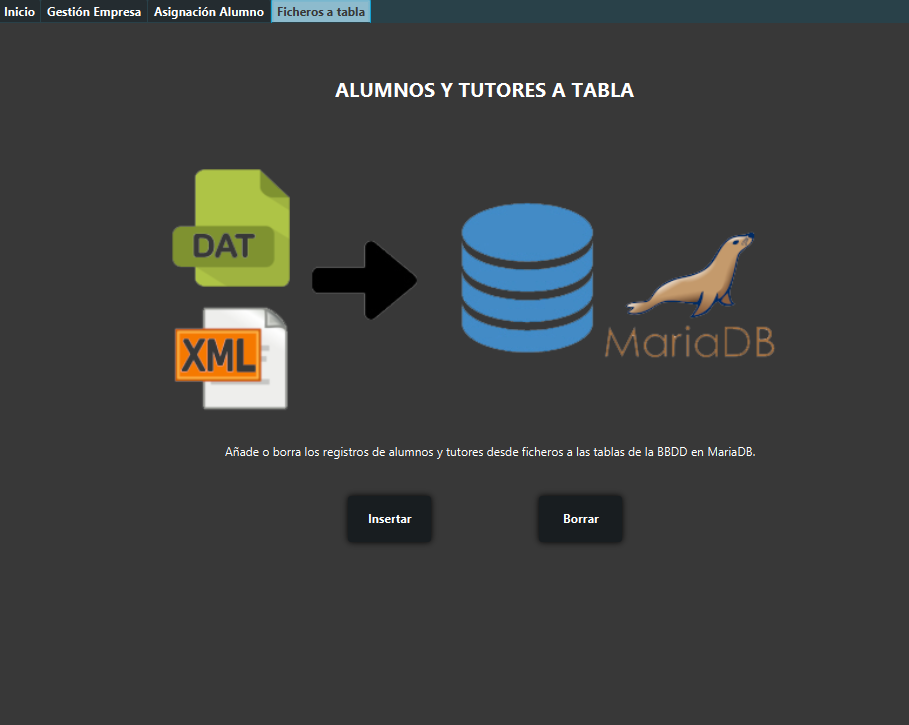
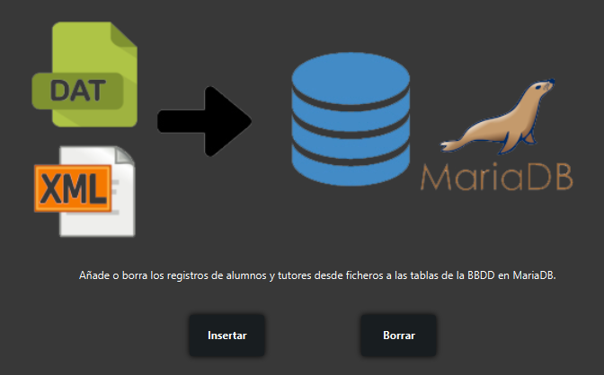

Ficheros a tabla

En este apartado de la aplicación podemos ver dos botones que pasarán información a través de ficheros a la base de datos que contiene los datos del programa.

- El primer botón (actualizar alumnos) recoge de un fichero binario (alumnos2CFS.dat), los datos (Código de alumno, dni, nombre, apellidos y fecha de nacimiento) de todos los alumnos que están incluidos en este, pasando a formar parte de la tabla 'alumnos' en la base de datos. En caso de que algún alumno esté duplicado no se insertará ya que cada uno tiene su ID para evitar la redundancia de datos.
- El segundo botón, actualizar tutores, recoge de un fichero XML (tutoresSAFA.xml), los datos (Código de tutor, nombre, apellido, correo y teléfono) de todos los tutores que esten incluidos en este, pasando a formar parte de la tabla 'tutores' en la base de datos. En caso de que algún tutor esté duplicado no se insertará ya que cada uno tiene su ID para evitar la redundancia de datos.